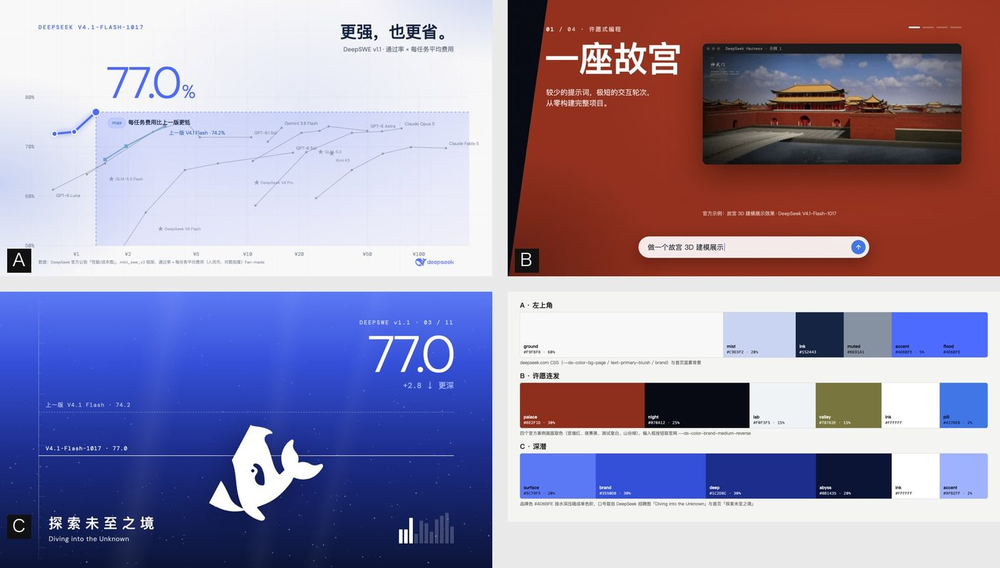
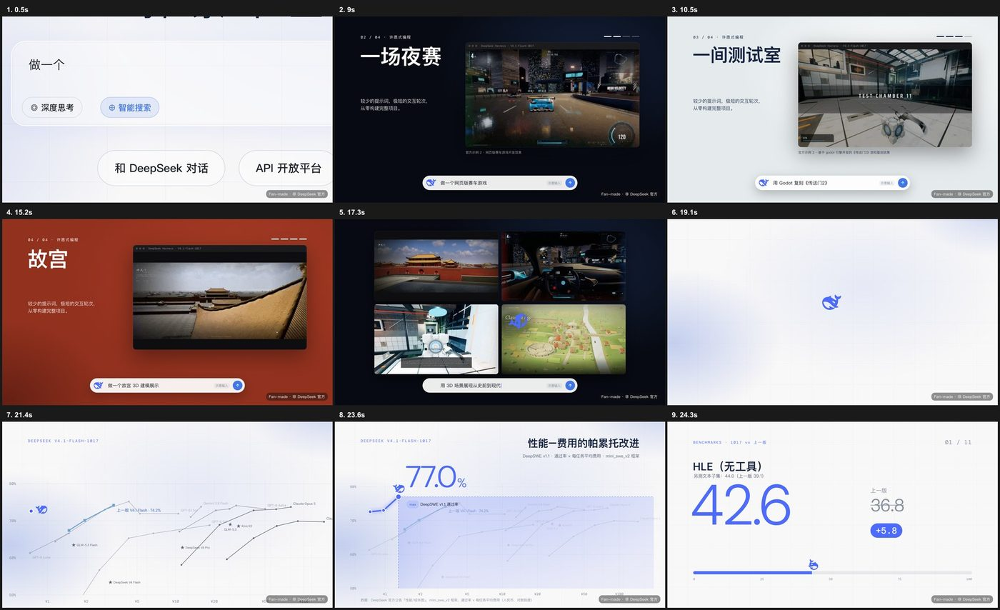
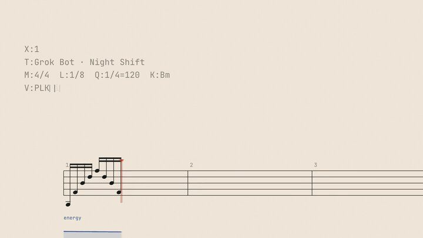
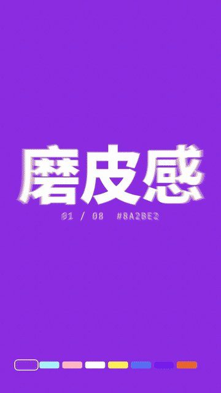
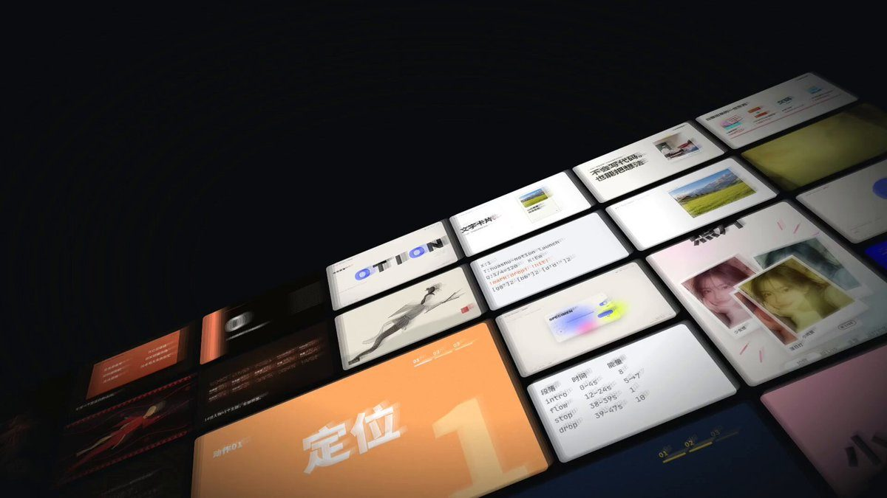

导读
花叔把 10 月 8 日 Anthropic 发布的 Claude Motion（代码写动画、指着画面改，仍只在 Team/Enterprise 上 beta）当成对标，做了一个开源 skill：huashu-motion。装上后跟 Claude Code、Codex 说一句「给我的产品做个 30 秒的发布片」，agent 会读产品、出三个带真渲染关键帧的方向、写节奏单、先做最难的镜头、自检截帧、写谱配乐配音效，最后在浏览器编辑器里等你按 C 点画面改。它的“导演规则”来自量 21 支真实发布片（切点、节拍、响度、能量曲线、颜色）和拆 142 支高互动片子。作者用它一天做了约 20 支片；换成 DeepSeek V4.1 Flash 也能出 22 秒带配乐的片子，自称花了 1.95 元。
这是花叔继 《七里香》莫奈风 MV（huashu-art-motion）之后的又一个动效 skill：前者偏“画动起来”的艺术短片，这次瞄准的是商业发布片。
要点
- 对标 Claude Motion，但开源、本地、带声音：一支片子就是一个
index.html（GSAP / Canvas / Three.js / SVG），不调视频生成模型，每帧只由代码和时间决定。 - 九步流程：读偏好与经验 → 读产品并发默认值清单 → 三个方向（真渲染关键帧+色板/节奏/配乐卡）→ 先写节奏单
treatment.md→ 先做最难的镜头 → 自检截帧 → 写谱配乐+逐帧音效 → 浏览器编辑器指着改 → 导出并回收经验。 - 规则来自测量：21 支真实发布片用 ffmpeg 量切点/节拍/响度/能量曲线/颜色，142 支片子按产品类型归纳出 20 种“运动语言”；节奏单硬规则如“3 秒内有钩子、中段一次爆发、最响那下前先停一拍”。
- 先写谱再拍片：agent 用 ABC 记谱法写配乐，场景标记对齐画面，本机用采样（可选 ~55MB CC0/CC-BY）或合成音色演奏；23 种音效挂在动画落地那一行代码上。
- 指着画面改：编辑器里按 C 点一下写意见，评论带时间点、场景、元素和源码位置进入 agent 的收件箱，只改那一处；数字/颜色/时长变成可直接改的输入框。
- 诚实边界：它听不见（最后一耳朵靠人）；不生成真人和实拍；效果和模型品味有关；目前只在 macOS 实测。
原文全文
以下为花叔 X 长文原文（中文，未改动）。文中视频/动图仅以封面帧代替，完整片子请看原帖或仓库 Releases。
站住，别急着下滑！我们先看两支片子，记得开声音😐。
第一支是昨天DeepSeek-V4.1-Flash-1017发布时，我用Opus5.5做的发布片，发到X上以后，不少人以为这是DeepSeek官方的宣传片：
第二支是我为了测试DeepSeek这个新模型到底怎么样，让它自己去做的展示自己能做的动效能力的片子：
【嵌入帖 · 10-17 19:17（UTC+8）】实测了！DeepSeek-V4.1-Flash-1017 做动效的水平非常牛，基本上仅次于Claude模型的水平。用GPT-6暂时也没做出这么好的效果。当然，这是搭配了我新做的动效skill做到的，预计下周发布，敬请期待。
附 22 秒视频，点击看原帖（视频封面为纯色，未转存）。
22秒，带配乐和音效，前后不到半小时，算了下花了1块9毛5（缓存命中率99.4%）。
当然，两支片子都不算所谓的「一句话提示词」做出来的，因为背后还装着skill呢，也就是今天开源的主角：Huashu-motion
就像你在标题中所看到的，你可以理解为这是个帮你用coding agent做出商业级产品宣传片的skill。
装上huashu-motion以后，你跟Claude Code、Codex这些agent说一句「给我的产品做个30秒的发布片」，它会先去读你的产品（或者通过网络搜索帮你查找），像Huashu-Design一样给你提供三个设计方向让你挑，选定以后写出整支片子，自己写谱配乐，然后在浏览器里打开一个编辑器等你。哪里不满意，按C，在画面上点一下，写下要改什么，它就只改那一处。
对标科技巨头的发布片
这个项目的起点是Claude Motion。10月8号Anthropic发布了它，让Claude用代码把报告、图表、产品讲解做成短动画，可以指着画面改，不过我查到的是，现在也还只在Team和Enterprise上beta。今年4月Claude Design出来的时候，我把它的核心能力逆向成了skill，就是后来的huashu-design，所以这次我也让Claude Code直接开工了，要求就一句：
我们的skill需要能够完整复刻claude motion的能力，并且要强很多！
结果第一天做出来的东西，我看着都很无聊。编辑器、版本管理、一百多项测试都有了，一个19秒的3D城市样片，但。。。就是很稀烂。运镜上缺乏节奏，很平稳，也就代表着很平庸……这也不是为了这次的动画调整。
所以我后面给agent，定了个目标，跟他画个饼表示希望我们的skill能帮助用户做出顶级的东西，想做出视觉效果、动效、音效、配乐，传达都是百万美元产品发布广告片级别的产品！
所以我们测试的，以及制作的目标，就是让你也能做出Apple、Google、Anthropic这些科技巨头那种商业级的宣传片。
标准定在那儿，就得先弄清楚那些片子到底是怎么做的。于是它去YouTube下了21支真实的发布片和开场片（Apple、Nothing、GoPro、Google、Vercel、Linear，还有Anthropic自己的），用ffmpeg一支一支地量切点、节拍、响度、能量曲线和颜色，又拆了142支高互动的发布片和动效片，按产品类型整理出各自用了什么手法。
这些量出来的东西，最后都变成了huashu-motion的导演规则，后面那些步骤，读产品、找颜色、写节奏单、作曲、冷审，其实都是在把这几百支片子的做法拆开，一步步教给agent。我们拿来测试的也全是真实产品的发布片，DeepSeek V4.1 Flash、小猫补光灯Pro、huashu-design 3.0、女娲，还有几个朋友的产品。
一句话之后，它在干什么
「一键直出」是这个意思：你说一句话进去，出来的是一支配好乐、能直接发的片子，后面你要改的，是你自己想改的细节。最省事的用法，是跟它说一句直接做，它会自己选最稳的那个方向，说一句为什么，另外两个方向留到交付的时候一句话提给你，节奏单、检查这些步骤它照样自己走完。
想多参与一点的话，后面它大概会走这么九步：
1、先读你以前说过的偏好，和过去的片子里攒下的经验；
2、读你的产品，官网、App Store页面、README、logo、品牌色，读完给你发一条消息，把它打算怎么做的默认值都写进去，你哪条不同意就改哪条，顺便定下要不要口播；
3、出三个方向，每个方向一张真渲染出来的关键帧，加一张写着色板、节奏和配乐的小卡片，你挑一个，或者混着挑；

4、选定以后先写一份节奏单（treatment.md），没写完不许开工；
5、先做最难的那个镜头，按最终的分辨率、字体和颜色做到位，再做其他的；
6、自己跑检查，截关键帧来看，字有没有被裁掉、有没有压在界面上、有没有空镜；

7、写谱配乐，画面上每个东西落地的那一帧配一个音效；

8、在浏览器里打开编辑器，等你指着画面改；
9、你说可以了，导出，再把这一次你说过的话、改过的地方收一遍，你的宣传片就出来了，以及如果你不满意，也依然还可以随便修改。
一天，二十支
前天凌晨两点，我要睡觉了，跟它说了一句：
我要睡觉了，接下来你把后续的宣传片也都做了。所有的选择都由你自己来判断和决策！
醒来的时候，剩下的五支片子都做完了。那天白天我又在FanBox里开了好几个窗口接着做，前后加起来大概二十支。
这段取自huashu-motion给自己做的发布片，16个镜头来自其中七支片子，按拍子切。
小猫补光灯Pro，第一版竖屏16秒，做成了小猫补光灯Pro在App Store的预览视频，已经提交审核了。后来按新的节奏方法又重做了三个方向，这是其中一支，八种补光色，一拍换一种：

Grok Bot（粉丝自制，非官方），30秒，傍晚交代任务，夜里几个agent各干各的，早上7点手机上收到四条汇报：
带走这个skill
skill开源在GitHub：
https://github.com/alchaincyf/huashu-motion
安装：
npx skills add alchaincyf/huashu-motion或者直接跟你的agent说：
帮我安装 huashu-motion 这个skill
（github.com/alchaincyf/huashu-motion），装好后跑一遍demo需要Node 22以上，电脑上有Chrome（或者Chromium、Edge），导出视频和合成配乐还要FFmpeg，目前只在macOS上实测过。想用真钢琴、弦乐这些乐器音色，要让agent跑一次om samples build，下载大约55MB的免费采样（CC0和CC-BY授权），不跑的话会用合成音色。缺什么跑一下om doctor就知道，这些你都可以直接让agent帮你装。
装完之后，可以这么跟它说：
用huashu-motion给我的产品做一支30秒的发布片，官网是xxx.com用huashu-motion把{数据图表/PPT}做成30秒的解说，讲清楚为什么我们的注册率翻倍了用huashu-motion做一支发布片，要口播，用我自己的录音：{视频/音频文件}我自己主要在Claude Code里用，模型是Opus 5.5，上面也看到了，换成DeepSeek V4.1 Flash也能做得不错，不过不同模型的品味差别是真实存在的。Codex也跑过，Cursor、OpenClaw、Gemini CLI这些支持skill的agent应该也能装，我还没逐个试，不需要额外的API key。
也说几个它做不到的。它听不见，配乐它只能靠谱面、能量曲线和频谱图去查，最后那一耳朵还得是你自己；它也不会凭空生成真人和实拍，要真人，就用你自己的素材，它负责合成和包装。
仓库里带了20种运动语言、10个起步模板、23种音效、3份示范谱，还有导演、节奏、颜色、声音、口播这几份方法文档。
也欢迎在WorkBuddy、豆包工作、Grok bot、Muse等产品里装上试试，看看跑得怎么样，有问题或者做出了好看的片子，都欢迎发给我。
one more thing！既然这是个做产品宣传片的项目，怎么能不让ta来介绍下自己的发布呢👇

（原文末尾另附作者公众号/B站/小红书二维码图，此处略。）
仓库 README 补充（MIT，摘译/摘录）
仓库 README 为中文，MIT 许可（「豆子花叔」卡通角色除外，不随 MIT 授权；GSAP 与字体保留各自许可）。长文没讲、但值得知道的几点：
- 架构：
你的agent ──写──▶ my-film/index.html ◀──盯着── om studio
；你在画面上点一下、写一句，评论落进.om/inbox.jsonl，agent 用om inbox --wait接单。没有私有格式，片子就是一个网页，带走就能用。
- 颜色也量过：
顶级发布片的颜色几乎都是找来的（品牌色、产品外壳和界面、实拍里的光）
，所以三个方向先从产品里找颜色，om swatch摆出色板和对比度。 - 兜底配乐：不想作曲时，内置 12 类产品 × 每类 3 种配乐方向，按种子挑、可重抽。口播可用系统音色或自己的录音，逐字对齐（whisper-cli），说话时配乐让位。
- 自研渲染：直接驱动本机 Chrome，按 CPU 核数并行（默认最多 8 个）；作者称 30 秒片子在 14 核 Mac 上约 12–15 秒渲完，加运动模糊约 1–1.5 分钟。
- 交付前挑错：
om check（渲染前查脚本/缺文件/违规动画写法，抽帧查裁切、遮挡、对比度）、om qa（查一闪而过的单帧、空档、硬切、运动曲线）；要求交付前真的看帧，能派独立 agent 冷审就派。 - 输出：MP4、透明 MOV、WebM、GIF，或带播放器和源码的分享页；「改成竖屏」会 fork 一份 1080×1920。
- 背后的故事里比长文多一句：第一版推倒前，让 Claude 自审，结论是
做出了一个很会证明自己没撒谎的工程，却还没有一个让人想转发的作品。
之后把每次「不酷」「无聊」「字体难看」都变成规则写回 skill。
核对（2026-10-18 22:00 前后，UTC+8）
- Claude Motion：Anthropic 2026-10-08 发布，beta 仅限 Team 与 Enterprise（Team 默认开、Enterprise 需管理员开启），不用视频生成模型——官方公告、帮助中心与 Reuters 报道一致。✅
- DeepSeek-V4.1-Flash-1017：@deepseek_ai 于 10-17 16:35（UTC+8）发帖发布，与“昨天发布”相符。✅
- 仓库内容数量（GitHub 公开 API 读取文件树）：
references/library/languages/下 20 个运动语言文件 ✅；templates/10 个模板（blank、finance-chart、keynote-ui、kinetic-type、kurzgesagt、math-3b1b、storytime、talking-head、vox-collage、whiteboard）✅；cli/lib/sound.js定义 23 种音效（pop、tick、click、whoosh … shutter）✅；示范谱 3 份（first-light、four-rooms、signal .abc）✅；方法文档含 director / rhythm / colour / sound / talking-head 等 13 份 ✅；test/21 个测试文件（“一百多项测试”未逐条计数）。 - 仓库状态：MIT，版本 0.1.0，创建于 10-18 20:19（UTC+8），抓取时 69★ / 14 fork。
- 无法核实：“不少人以为是 DeepSeek 官方宣传片”、1.95 元/缓存命中率 99.4%、一夜五支/一天二十支、21 支与 142 支片子的测量过程、小猫补光灯 Pro 预览视频已提交审核——均为作者自述。另：“去 YouTube 下了 21 支发布片”涉及 YouTube 条款，README 称仓库只记录测量参数、不含画面。
对我们的启发
- 把“品味”变成可测的参数：与其在提示词里写“要有电影感”，不如像这里一样先量一批标杆（切点密度、节拍、响度、能量曲线、取色来源），再写成规则。这与 Florence 动效实验室“形容词换成数字”、Vox“你听不见，所以要测量”是同一条路。
- 流程闸门比提示词更重要：节奏单没写完不许开工、先做最难的镜头、交付前截帧自检+冷审——这些是 harness，不是 prompt；便宜模型（DeepSeek Flash）也能出像样片子，正说明方法被固化进了 skill。
- “指着画面改”是代码动画的关键交互：评论带时间点+元素+源码位置，agent 只改一处，参数暴露成输入框——比重新描述一遍需求省得多，值得在任何“AI 生成可视化”工具里借鉴。
- 代码即片子：一支片=一个 HTML，版本可 diff、可 fork 改竖屏、可导出分享页，跟 Prompt Motion、Skillry 视频大赏、Motion Graphics Music Video 等代码动画方案可以对照看；动效术语可配合 Motion Prompt 名字库。
- 边界要说清：不生成实拍/真人、听不见、模型品味差异——作者自己写出了“做不到的”，读者落地时也应把人耳终审和真实素材留在流程里。